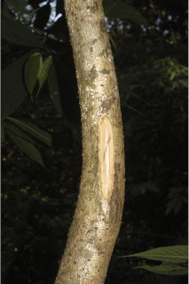
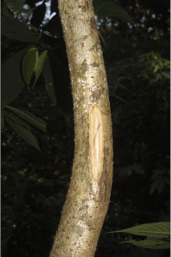
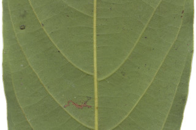
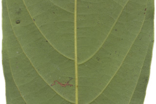

Trees up to 6 m tall.
6 ಮೀ.ವರೆವಿಗೆ ಬೆಳೆಯುವ ಮರಗಳು.
6 മീറ്റര് വരെ ഉയരമുളള മരങ്ങള്.
மரங்கள் 6 மீ. உயரம் வரை வளரக்கூடியது.
Bark grey, brownish, lenticellate.
ತೊಗಟೆ ಬೂದು ಬಣ್ಣದಲ್ಲಿರುತ್ತದೆ ಮತ್ತು ಕಂದು ಬಣ್ಣದ ವಾಯುವಿನಿಮಯ ಬೆಂಡು ರಂಧ್ರಗಳ ಸಮೇತವಿರುತ್ತದೆ.
ശ്വസനരന്ധ്രങ്ങളുളള ചാരകലര്ന്ന തവിട്ട് നിറത്തിലുളള പുറംതൊലി.
மரத்தின் பட்டை சாம்பல் நிறமானது, ப்ரவுன் நிறமானது, லெண்டிசெல்லேட் (பட்டைத்துளைகள்) உடையது.
Branches with architecture of “ Aubreville_model ”; branchlets terete, glabrous.
ಕವಲುಗಳು “ಆಬ್ರೆವಿಲ್ಲೆ” ವಿನ್ಯಾಸದಲ್ಲಿರುತ್ತವೆ; ಕಿರುಕೊಂಬೆಗಳು ದುಂಡಾಕಾರದಲ್ಲಿದ್ದು ರೋಮರಹಿತವಾಗಿರುತ್ತವೆ.
`ഓബ്രിവില്ലെ മാതൃകയില്' ക്രമീകരിച്ചിരിക്കുന്ന ശാഖകള്; അരോമിലമായ, ഉരുണ്ട ഉപശാഖകള്.
கிளைகள் “ஆப்ரவில் மாதிரி” முறையில் கிளைக்கும்; சிறிய நுனிக்கிளைகள் குறுக்குவெட்டுத் தோற்றத்தில் வளையம் போன்றது, உரோமங்களற்றது.
Leaves simple, alternate, spiral, clustered at twig ends; petiole 0.5-1.2 cm, slightly canaliculate above, glabrous; lamina 8-18 x 1.7-3.8 cm, usually narrow elliptic, sometimes narrow oblanceolate, apex narrowly and gradually long acuminate, base acute to cuneate, margin entire, chartaceous, glabrous, slightly glaucous and sparsely puberulous beneath; midrib slightly canaliculate above; secondary_nerves 8-14 pairs, gradually curved and ascending; tertiary_nerves reticulo-percurrent.
ಎಲೆಗಳು ಸರಳವಾಗಿದ್ದು,ಪರ್ಯಾಯ ಮತ್ತು ಸುತ್ತು ಜೋಡನಾ ವ್ಯವಸ್ಥೆಯಲ್ಲಿದ್ದು ಕುಡಿಕೊಂಬೆಗಳ ತುದಿಯಲ್ಲಿರುತ್ತವೆ; ತೊಟ್ಟುಗಳು 0.5- 1.2 ಸೆಂ.ಮೀ. ವರೆಗಿನ ಉದ್ದ ಹೊಂದಿದ್ದು ಅಡ್ಡ ಪತ್ರದ ಮೇಲ್ಭಾಗದಲ್ಲಿ ಹಗುರವಾದ ಕಾಲುವೆಗೆರೆ ಸಮೇತವಿರುತ್ತವೆ ಮತ್ತು ರೋಮರಹಿತವಾಗಿರುತ್ತವೆ; ಪತ್ರಗಳು 8-18 x 1.7-3.8 ಸೆಂ.ಮೀ ಗಾತ್ರ ಹೊಂದಿದ್ದುಸಾಮಾನ್ಯವಾಗಿ ಅಂಡವೃತ್ತ ಕೆಲವು ವೇಳೆ ಬುಗುರಿ-ಭರ್ಜಿಯ ಆಕಾರದಲ್ಲಿರುತ್ತವೆ. ಪತ್ರದ ತುದಿ ಸಂಕುಚಿತವಾಗಿ ಮತ್ತು ಹಂತ ಹಂತವಾಗಿ ಉದ್ದನೆಯ ಕ್ರಮೇಣ ಚೂಪಾಗುವ ಮಾದರಿಯಲ್ಲಿರುತ್ತದೆ; ಬುಡ ಚೂಪಾದುದರಿಂದ ಬೆಣೆಯಾಕಾರದವರೆಗಿನ ಮಾದರಿಯಲ್ಲಿರುತ್ತದೆ;ಅಂಚು ನಯವಾಗಿರುತ್ತದೆ;ಪತ್ರಗಳ ಮೇಲ್ಮೈಕಾಗದವನ್ನೋಲುವ ಮಾದರಿಯಲ್ಲಿದ್ದು ರೋಮರಹಿತವಾಗಿರುತ್ತದೆ ಮತ್ತು ತಳಭಾಗದಲ್ಲಿ ಕೊಂಚ ಮಾಸಲು ಬೂದು ಹಸಿರು ಬಣ್ಣ ಹೊಂದಿರುತ್ತದೆ ಮತ್ತು ವಿರಳವಾಗಿ ಸೂಕ್ಷ್ಮ ಮೃದು ತುಪ್ಪಳವನ್ನು ಹೊಂದಿರುತ್ತದೆ;ಮಧ್ಯನಾಳ ಪತ್ರದ ಮೇಲ್ಭಾಗದಲ್ಲಿ ಹಗುರವಾದ ಕಾಲುವೆಗೆರೆಯನ್ನು ಹೊಂದಿರುತ್ತದೆ;ಎರಡನೇ ದರ್ಜೆಯ ನಾಳಗಳು 8-14 ಜೋಡಿಗಳಿದ್ದು ಕ್ರಮೇಣವಾಗಿ ಬಾಗಿರುತ್ತವೆ ಮತ್ತು ಆರೋಹಣ ಮಾದರಿಯಲ್ಲಿರುತ್ತವೆ.ಮೂರನೇ ದರ್ಜೆಯ ನಾಳಗಳು ಜಾಲಬಂಧ ನಾಳ ವಿನ್ಯಾಸ ಹೊಂದಿದ್ದು ಎಲೆದಿಂಡಿಗೆ ಅಡ್ಡವಾಗಿ ಕೂಡುವ ರೀತಿಯವು.
ലഘുവായ ഇലകള്, ഏകാന്തര ക്രമത്തില്, സര്പ്പിളമായി, തണ്ടിന്റെ അറ്റത്ത് കൂട്ടമായി അടുക്കിയ വിധത്തിലാണ്; അരോമിലമായ, ലഘുവായി ചാലുളള, ഇലഞെട്ടിന് 0.5 സെ.മീ മുതല് 1.2 സെ.മീ വരെ നീളം; പത്രഫലകത്തിന് 8 സെ.മീ മുതല് 1.8 സെ.മീ വരെ നീളവും 1.7 സെ.മീ തൊട്ട് 3.8 സെ.മീ വരെ വീതിയും, സാധാരണയായി, വീതികുറഞ്ഞ ദീര്ഘവൃത്താകാരവുമാണ്, ചിലപ്പോള് വീതികുറഞ്ഞ അപകുന്താകാരവുമാകാം; പത്രാഗ്രം വീതികുറഞ്ഞ, സാവധാനം അവസാനിക്കുന്ന നീളന് ദീര്ഘാഗ്രവുമാണ്, പത്രധാരം നിശിതാഗ്രംതൊട്ട് ആപ്പാകാരം വരെയാകാം, അവിഭജിതമായ അരികുകള്, കടലാസ്പോലത്തെ പ്രകൃതം, അരോമിലം, കീഴ്ഭാഗം ചെറുതായി നീലരാശി കലര്ന്നതും ലഘുവായി നനുത്ത രോമിലവുമാണ്; മുഖ്യസിര മുകളില് ചെറുതായി ചാലുളളതാണ്; ആരോഹണക്രമത്തില് സാവധാനം വളഞ്ഞ് പോകുന്ന 8 മുതല് 14 വരെ ജോഡി ദ്വിതീയ ഞരമ്പുകളുണ്ട്; ജാലിത-പെര്കറന്റ് വിധത്തിലുളള ത്രിതീയ ഞരമ്പുകള്.
இலைகள் தனித்தவை, மாற்றுஅடுக்கமானவை, சுழல் போல் அமைந்தவை, சப்வர்டிசில்லேட், கூட்டாக தண்டின் நுனியில் அமைந்தவை; இலைக்காம்பு 0.5-1.2 செ.மீ. நீளமானது, குறுக்குவெட்டுத் தோற்றத்தில் கேனாலிகுலேட், உரோமங்களற்றது; இலை அலகு 8-18 X 1.7-3.8 செ.மீ., பொதுவாக குறுகிய நீள்வட்ட வடிவானது, சிலசமயங்களில் குறுகிய தலைகீழ் ஈட்டி வடிவானது, அலகின் நுனி சிறிது சிறிதாக குறுகிய அதிக்கூரியது, அலகின் தளம் கூரியது முதல் ஆப்பு வடிவானது, அலகின் விளிம்பு முழுமையானது, சார்ட்டேசியஸ், உரோமங்களற்றது, அலகின் கீழ்பரப்பு சிறிதளவு மெழுகு பூசியது போன்றது அல்லது சாம்பல் கலந்த நீல நிறமானது (க்களாக்கஸ்) மற்றும் குறைந்தளவு நுண்ணிய உரோமங்களுடையது; மையநரம்பு மேற்பரப்பில் அலகின் பரப்பைவிட பள்ளமானது; இரண்டாம் நிலை நரம்புகள் 8-14 ஜோடிகள், சிறிது சிறிதாக வளைந்து நுனி நோக்கியது; மூன்றாம் நிலை நரம்புகள் வலைப்பின்னல்-பெர்க்கரண்ட்.
Flowers in axillary or subterminal racemes; pedicels filiform and long; anthers 2 celled.
ಹೂಗಳು ಅಕ್ಷಾಕಂಕುಳಿನಲ್ಲಿರುವ ಅಥವಾ ಉಪ-ತುದಿಯಲ್ಲಿನ ಮಧ್ಯಾಭಿಸರ ಪುಷ್ಪಮಂಜರಿ -ಯಲ್ಲಿರುತ್ತವೆ;ಹೂತೊಟ್ಟುಗಳು ಉದ್ದವಾಗಿದ್ದು ದಾರದ ರೂಪದಲ್ಲಿರುತ್ತವೆ; ಪರಾಗಾಶಯ 2 ಕೋಶಗಳನ್ನು ಹೊಂದಿರುತ್ತದೆ.
രണ്ടറകളുളള കേസരങ്ങളുളളതും നാരുപോലുളള, നീളന് ഞെട്ടോടുകൂടിയതുമായ പൂക്കള്, കക്ഷീയമോ ഉപഉച്ഛസ്ഥമോ ആയ റസീമുകളിലുണ്ടാകുന്നു.
மலர்கள் இலைக்கோணங்களில் அல்லது கிட்டதட்ட நுனியில் அமைந்த ரெசீம்; மலர்காம்பு மெலிந்தது மற்றும் நுண்ணியது; மகரந்தபை இரண்டு அறைகளுடையது.
Drupaceous, globose or ovoid, seated on the persistent fruiting_perianth_lobes; seed 1.
ಬೆರ್ರಿಗಳು ಗೋಳಾಕಾರ ಅಥವಾ ಅಂಡಾಕಾರದಲ್ಲಿದ್ದು ಶಾಶ್ವತವಾದ ಪುಷ್ಪಾವರಣ ದಳಗಳ ಮೇಲೆ ಆಸೀನವಾಗಿರುತ್ತವೆ ಮತ್ತು ಒಂದು ಬೀಜವನ್ನೊಳಗೊಂಡಿರುತ್ತವೆ.
ഒറ്റവിത്തുളള കായ, ഉറച്ചു നില്ക്കുന്ന പരിദളങ്ങളിലുറപ്പിച്ചിരിക്കുന്നു, ഗോളാകാരമോ അണ്ഡാകാരമോ ആയ ഡ്രൂപ്പ് ആണ്.
உள்ளோட்டுத்தசைகனி (ட்ரூப்), போன்றது, கோளவடிவானது, அல்லது முட்டை வடிவானது, கனி நிரந்தரமான ப்பீரியான்ந்த் இதழ்கள் கொண்டது; விதை ஒன்றுடையது.
 



 
